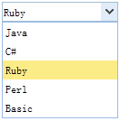

可装载组合框
继承$.fn.combo.defaults，使用$.fn.combobox.defaults重载默认值。
依赖关系
- 自定义组合框
使用方法
The json data format sample:
属性
继承自定义组合框的属性, 以下是可装载组合框的独有属性。
| 名称 | 类型 | 描述 | 默认值 |
|---|---|---|---|
| valueField（值域） | string（字符串） | 绑定到组合框下的数据的值域的名称。 | value |
| textField（文本域） | string（字符串） | 绑定到组合框下数据的文本域的名称。 | text |
| mode（模式） | string（字符串） | 定义当文本发生改变时，如何载入数据列表。如果组合框要从远程地址载入数据，设置为'remote'。 | local |
| url（超链接地址） | string（字符串） | 可供载入数据列表的远程地址。 | null |
| method（方法） | string（字符串） | 获取数据的HTTP方法。 | post |
| data（数据） | array（数组） | 将被载入的数据列表。 | null |
| filter（过滤器） | function（函数） | 定义当模式设置为'local'时如何过滤本地数据，function有2个参数： q: 用户输入的文本。 row: 数据列表 返回true将允许显示数据列表。 |
|
| formatter(格式) | function（函数） | 定义如何返回数据，function有一个参数：row。 |
事件
事件继承自定义组合框，以下是可装载组合框的独有事件。
| 名称 | 参数 | 描述 |
|---|---|---|
| onLoadSuccess | none | 当远程数据载入成功时触发。 |
| onLoadError | none | 当远程数据载入错误时触发。 |
| onSelect | record | 当用户选择一个列表项时触发。 |
| onUnselect | record | 当用户取消选择一个列表项时触发。 |
方法
方法继承自定义组合框，以下是可装载组合框独有的或者重载自定义组合框的方法。
| 名称 | 参数 | 描述 |
|---|---|---|
| options | none | 返回属性对象。 |
| getData | none | 返回已载入的数据。 |
| loadData | data | 载入本地数据列表。 |
| reload | url | 请求远程数据列表。 |
| setValues | values | 设置组合框的值，参数values是一个数组。 |
| setValue | value | 设置组合框的值。 |
| clear | none | 清除组合框的值。 |
| select | value | 选择特定的项目。 |
| unselect | value | 取消选择特定的项目。 |
 |
|
|
|